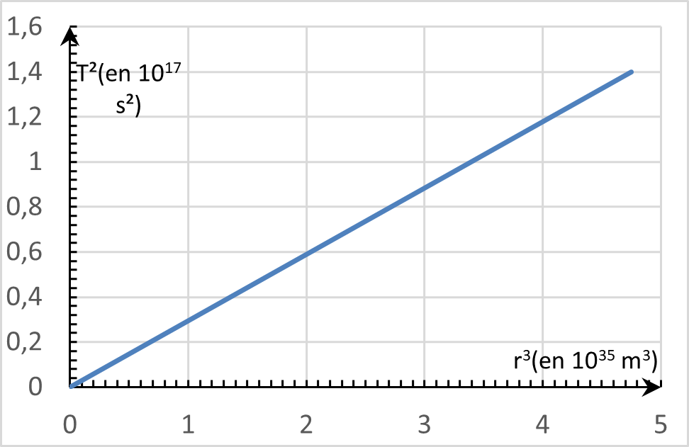

Lycée Taiarapu Nui
Terminale Générale
Spécialité Physique – Chimie
2020-2021
Terminale Générale
Spécialité Physique – Chimie
2020-2021
A l'aide d'un langage de programmation ...
Langage python
Quelques notions à retenir concernant les courbes.
Pour plus d'informations https://matplotlib.org/api/
Rappel : Python tient compte de l'indentation (le retrait par rapport à la marge).Le module matplotlib
Les courbes se tracent avec la bibliothèque (ou module)
matplotlib. Le début du code pour afficher un graphique
va comment ainsi :
import
matplotlib.pyplot
as
plt
fig = plt.figure("monTitre")
fig = plt.figure("monTitre")
plt est l'alias,
on peut mettre autre chose que plt.
figure permet de créer la fenêtre ayant pour nom "monTitre".
figure permet de créer la fenêtre ayant pour nom "monTitre".
Les axes et leurs noms
Il n'y a pas besoin de configurer les axes, mais on peut le faire grâce aux commandes suivantes :
plt.axis([Xmin,
Xmax,
Ymin,
Ymax
])
plt.title("titre du graphique")
plt.xlabel("nom axe x")
plt.ylabel("nom axe y")
plt.title("titre du graphique")
plt.xlabel("nom axe x")
plt.ylabel("nom axe y")
axis définit les valeurs minimales et maximales des axes.
title définit le nom du graphique.
xlabel définit le nom de l'axe x.
ylabel définit le nom de l'axe y.
title définit le nom du graphique.
xlabel définit le nom de l'axe x.
ylabel définit le nom de l'axe y.
Le tracé de la courbe
plt.plot(X,Y,"bx-")
plot place un point aux coordonnées
X,Y.
Si X et Y sont des listes, cela trace la courbe.
Si X et Y sont des listes, cela trace la courbe.
La partie entre guillement " " correspond au type de point et de tracé. Dans l'ordre on a :
la couleur b , le type de point
x, le type de tracé -.
| Couleur | |||||
| r | g | b | m | c | k |
| rouge | vert | bleu | magenta | cyan | noir |
| Type de point | |||||
| x | + | . | o | v | |
| croix | croix | petit point | grand point | triangle | |
| Type de tracé | |||||
| - | -- | ||||
| trait plein | pointillés | ||||
Afficher le graphique
plt.show(fig)
show(fig) Affiche la fenêtre
nommée fig.
Exercice 1
1) Utiliser la loi de Kepler sur les périodes, appliquée au mouvement circulaire pour
déterminer la masse de la Terre à partir des observations de la Lune. On suppose
que la Lune a une trajectoire circulaire de rayon $r=384 000\ km$ et de période
$T=27,32\ j$.
Donnée : $G=6,67×10^{-11}\ N.m^2.kg^{-2}$
Donnée : $G=6,67×10^{-11}\ N.m^2.kg^{-2}$
2) Les mesures actuelles donnent une masse de la Terre égale à $5,972×10^{24}\ kg$.
Sachant que la période de rotation de la Terre est de $T=23\ h\ 56\ min\ 4\ s$ calculer
le rayon de l’orbite d’un satellite géostationnaire puis en déduire son altitude
en kilomètre. (Rayon de la Terre $6300\ km$).
Exercice 2

L’astéroïde (87)Sylvia est l’un des plus grands astéroïdes de la ceinture
principale (entre Mars et Jupiter). C’est le premier astéroïde découvert à
posséder deux satellites naturels baptisés Remus et Romulus.
On s’intéresse au mouvement du centre de masse P de l’astéroïde Sylvia qui décrit autour du
Soleil une orbite assimilée à un cercle de rayon $r$. L’étude se fait dans le référentiel
héliocentrique considéré comme galiléen.
Donnée : Constante de gravitation : $G=6,67×10^{-11}\ N.m^2.kg^{-2}$
Donnée : Constante de gravitation : $G=6,67×10^{-11}\ N.m^2.kg^{-2}$
3) Montrer que dans le cas d’un mouvement circulaire, le mouvement de l’astéroïde Sylvia
de masse M, autour du Soleil de masse $M_S$, est uniforme.
4) Établir l’expression de la valeur $v$ de la vitesse de l’astéroïde Sylvia
sur son orbite, puis donner son expression vectorielle $\vec{v}$.
5) Établir la troisième loi de Kepler dans le référentiel héliocentrique.
6) Le graphique ci-contre a été tracé en prenant en compte les paramètres
caractéristiques de trois planètes du système solaire dont la trajectoire autour
du Soleil est quasi circulaire. Ce graphique traduit-il la troisième loi de Kepler ?
7) L’astéroïde Sylvia gravite autour du Soleil avec une période de révolution
de $6,521\ ans$. Déterminer le rayon $r$ de l’orbite de l’astéroïde Sylvia.
8) Les deux satellites Romulus et Remus décrivent une orbite circulaire.
Les distances entre chaque satellite et Sylvia sont $710\ km$ pour Remus
et $1360\ km$ pour Romulus. En appliquant la troisième loi de Kepler, déterminer
la masse de l’astéroïde Sylvia dans le cadre de l’hypothèse d’un mouvement
circulaire.
Attendus
Vous devez être capable :
Vous devez être capable :
# de définir une orbite géostationnaire
# d'exprimer l'accélération à partir de la 2e loi de Newton et du repère de Frenet
# d'exprimer la vitesse en fonction de la masse de l'astre et du rayon dans le cas d'une trajectroire circulaire
# d'énoncer les trois lois de Kepler
# de démonter la 3ème loi de Kepler pour une trajectoire circulaire
# d'exprimer l'accélération à partir de la 2e loi de Newton et du repère de Frenet
# d'exprimer la vitesse en fonction de la masse de l'astre et du rayon dans le cas d'une trajectroire circulaire
# d'énoncer les trois lois de Kepler
# de démonter la 3ème loi de Kepler pour une trajectoire circulaire